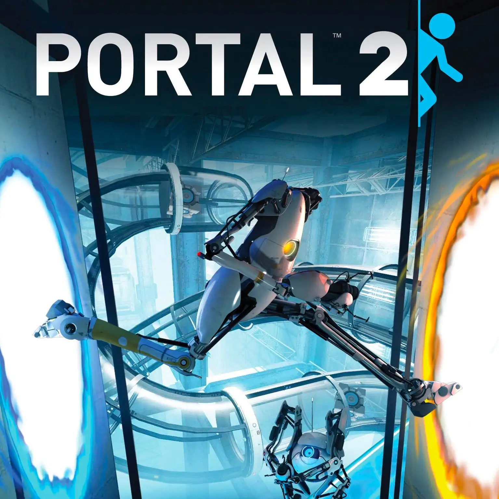

Elden Ring es un videojuego de rol, aventura y acción de FromSoftware y Bandai Namco,
creado por Hidetaka Miyazaki y George R.R. Martin.
El juego amplía la jugabilidad de Dark Souls en un mundo más grande y complejo.
Half-Life Alyx
Half-Life: Alyx es un shooter de realidad virtual que sirve como precuela de Half-Life 2,
sigue la historia de Alyx Vance luchando contra los Combine.
Baldur's Gate 3
Baldur's Gate 3 es la tercera entrega de la saga de rol,
desarrollada por Larian Studios con promesas de fidelidad a Dragones y Mazmorras.

Portal 2
Portal 2 es la secuela del exitoso juego de puzles de Valve.
Con modo cooperativo y un diseño ingenioso, se destaca como uno de los mejores juegos del género.
Minecraft
Minecraft es un juego de construcción sandbox creado por Markus Persson,
también conocido como "Notch", y desarrollado por Mojang Studios.
Se destaca por su mundo abierto y su falta de un objetivo definido.
Prince of Persia: The Lost Crown
Prince of Persia: The Lost Crown es un juego de plataformas de acción 2D para
PC que ofrece una experiencia emocionante en un mundo inspirado en la mitología persa,
con mecánicas de manipulación del tiempo y el espacio.
The Thaumaturge
The Thaumaturge es un RPG para PC y consolas que se desarrolla en la Varsovia del siglo XX,
donde los jugadores enfrentan decisiones morales y controlan seres místicos llamados Salutors.
Children of the Sun
Children of the Sun es un juego de disparos táctico y de puzles para PC,
donde los jugadores controlan una bala en su búsqueda de venganza contra una secta maligna.
Desarrollado por René Rother y publicado por Devolver Digital.
Juegos de Xbox
Hi-Fi Rush
Hi-Fi Rush es un videojuego tipo hack and slash que combina mecánicas de ritmo y plataformas.
Fue desarrollado por Tango Gameworks y publicado por Bethesda Softworks,
disponible para Microsoft Windows y Xbox Series X/S.
Hogwarts Legacy
Hogwarts Legacy es un juego de rol inmersivo en mundo abierto, inspirado en la saga Harry Potter.
Ambientado en el Hogwarts del siglo XIX, permite al jugador ser un estudiante que guarda un secreto capaz de destruir el
mundo mágico, poniendo al jugador en el centro de su propia aventura.
Atomic Heart
Atomic Heart es un videojuego FPS de mundo semiabierto con elementos de rol de acción.
El combate incluye disparos y peleas cuerpo a cuerpo contra una variedad de enemigos mecánicos,
biomecánicos y biológicos, como robots y mutantes.
Star Wars Jedi: Survivor
Star Wars Jedi: Survivor es un juego de acción y aventura en tercera persona de Respawn Entertainment, desarrollado con Lucasfilm Games.
Continuando la historia de Cal Kestis cinco años después de Star Wars Jedi: La Orden Caída,
el juego sigue su lucha en una galaxia cada vez más dominada por la oscuridad.
Sifu
Sifu es un videojuego beat 'em up roguelike de Sloclap.
Ambientado en la China moderna, sigue al hijo de un maestro de artes marciales que busca vengar la muerte de su padre.
Street Fighter 6
Street Fighter 6 permite a los jugadores viajar por el mundo para medir su habilidad y buscar su fuerza interior.
Todos comienzan desde abajo, y ahora es tu turno de aceptar el reto y mejorar tu juego.
Starfield
En un juego de rol de próxima generación ambientado en el espacio,
crea tu propio personaje y explora con total libertad mientras te sumerges en una aventura épica para resolver
el mayor misterio de la humanidad.
Forza Motorsport
Forza Motorsport es un videojuego de simulación de carreras desarrollado por Turn 10 Studios y publicado por Xbox Game Studios.
Es la decimotercera entrega de la serie Forza, disponible en Windows y Xbox Series X/S,
y reinicia la subserie abandonando la numeración secuencial.
Juegos de PS
God of War
God of War para PS4 reinventa a Kratos en una ambientación nórdica y con un enfoque más maduro,
donde él es un padre en un entorno hostil, tratando de olvidar su pasado.
Final Fantasy VII Remake
El remake de 'Final Fantasy VII' para PS4 mejora gráficos,
añade detalles a la historia y modifica el sistema de batallas y exploración, desarrollado por el equipo original.
Resident Evil 2 Remake
'Resident Evil 2 Remake' actualiza el clásico survival horror en su 20 aniversario para PS4,
ofreciendo una perspectiva jugable, estilo y ambientación renovados.
Conserva la esencia del juego original mientras introduce cambios técnicos y artísticos ambiciosos.
Spiderman
'Spider-Man' para PS4, desarrollado por Insomniac Games y producido por Sony,
es un juego de acción de mundo abierto ambientado en Nueva York, donde el jugador puede explorar libremente la ciudad
y disfrutar del icónico personaje.
Tekken 8
'Tekken 8', de Bandai Namco con Unreal Engine 5 para PS5,
presenta modelos de personajes HD con pelo y piel detallados, y
gráficos inmersivos que reflejan movimientos musculares realistas en combate.
Stellar Blade
En "Stellar Blade", Eve y su equipo llegan a una Tierra desolada y conocen a Adam, quien los lleva a Xion,
último bastión humano. Allí, interactúan con diversos personajes,
incluido Orcal, mientras Eve forja lazos y ayuda a reconstruir la ciudad para salvar el planeta.
Helldivers II
"Helldivers II" es un shooter de acción de Arrowhead Game Studios y Sony Interactive Entertainment para
PC y PS5, donde los jugadores encarnan a soldados pacificadores galácticos.
Sekiro: Shadows Die Twice
"Sekiro: Shadows Die Twice", de FromSoftware y dirigido por Hidetaka Miyazaki, es un juego de rol,
acción y sigilo ambientado en el Japón feudal para PS4.
Miyazaki, conocido por crear géneros propios, ofrece una experiencia única en esta aventura.
Juegos de Switch
Paper Mario: La Puerta Milenaria
En Paper Mario: La Puerta Milenaria, Mario transforma su forma para superar desafíos y rescatar a
Peach en un mundo lleno de obstáculos.
Debe encontrar Cristales Estrellas y enfrentarse a viejos amigos y enemigos. Disponible en GameCube y Switch.
Mario vs. Donkey Kong
En Mario vs. Donkey Kong para Switch, Nintendo revive la rivalidad clásica con gráficos actualizados.
Este juego de acción y puzles desafía a los jugadores a resolver diversos acertijos y demostrar sus habilidades
en plataformas para recuperar los Minimarios sustraídos.
Splatoon 3: La cara del orden
En Splatoon 3: La cara del orden para Switch, juegas como Agente 8 en una Cromópolis sin color. Con Perla como dron,
escalas la Torre del Orden, mejorando tus habilidades en una experiencia para un jugador rejugable y desafiante.
Princess Peach: Showtime!
En Princess Peach: Showtime! para Switch, la princesa Peach debe luchar
contra la malvada Grape y la Compañía Malaúva para salvar el Teatro Esplendor y su espectáculo.
Gundam Breaker 4
En Gundam Breaker 4 para PC, Switch, PlayStation 4 y PlayStation 5, desarrollado por Crafts & Meister y Bandai Namco Entertainment,
puedes crear y personalizar tu propio Gunpla, enfrentándolo a desafiantes misiones de combate en el universo Gundam.
Reynatis
En Reynatis, RPG de acción de FuRyu, Natsume Atari y NIS America para PC, Switch, PS4 y PS5,
fantasía y realidad colisionan en Shibuya. Un joven mago busca libertad,
mientras un oficial lucha por controlar la magia y restaurar el orden, desencadenando una oscuridad transformadora.
The Legend of Zelda: Tears of the Kingdom
Tears of the Kingdom, la secuela de Breath of the Wild para Nintendo Switch, protagonizada por Link,
presenta una aventura en mundo abierto en Hyrule.
Ofrece nuevas mecánicas de fusión de objetos y armas, zonas aéreas para explorar y más acción y rol.
Monster Hunter Rise: Sunbreak
Monster Hunter Rise: Sunbreak, expansión de Capcom para Switch, continúa la historia del juego original.
Presenta una nueva región, permite reclutar cazadores para misiones contra nuevas bestias y ofrece un desafiante Rango Maestro.